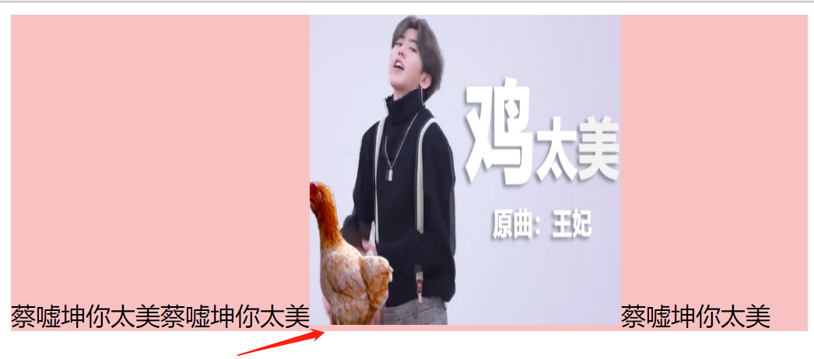

分享人：王熠(yì)华
目录
1.背景介绍
2.知识剖析
3.常见问题
4.解决方案
5.编码实战
6.扩展思考
7.参考文献
8.更多讨论
1.css中line-height:15px,line-height:1.5em,line-height:150%,line-height:1.5,有什么区别?
2. 图像元素在块级元素底部为什么留有空白？如何解決。
css中line-height:15px、150% 、1.5rem、1.5的区别
解决图像元素在块级元素底部留有的空白
图标底部留白的基本现象衍生：垂直居中
当给图片设置高和line-height后，我们会发现只是近似居中。x的中心位置都是在字符内容区域高度中心点的下方，而这上下的偏差就是这里图片上下间距的偏差。
换句话说middle中线位置(字符x的中心)并不是字符内容的绝对居中位置。两个位置的偏差就是图片近似居中的偏差。
参考一：CSS深入理解vertical-align和line-height的基友关系
参考二：全面理解解析line-height: 150%和line-height: 1.5em和line-height: 1.5rem和line-height: 1.5的区别
感谢大家观看
BY : 王熠华